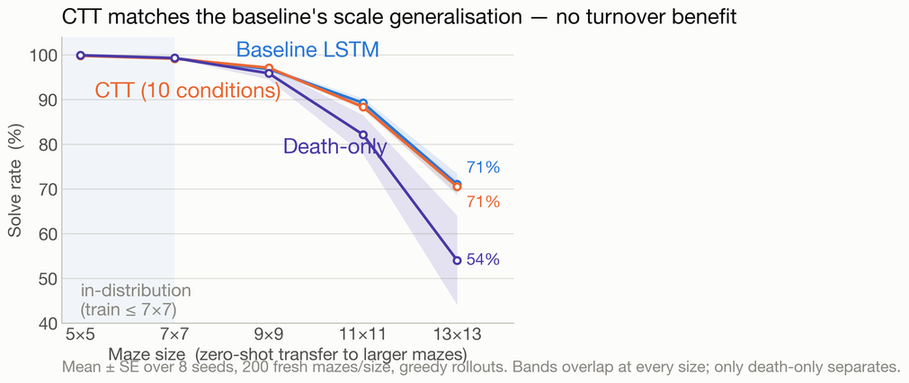

Background
CTT has two settings that are easy to confuse. Turnover magnitude is how much of the plastic layer is disturbed at each turnover event. The kill/birth ratio is whether that disturbance leaves the layer shrinking, balanced or growing. The biological analogy suggests the ratio should matter, since a circuit that is pruned and rebuilt in balance keeps capacity free for new structure without discarding what it already represents.
Catastrophic forgetting is usually measured over a sequence of tasks. This part of the project uses zero-shot scale transfer instead. A policy that has memorised the mazes it trained on will fail when the maze grows. A policy that has learned a transferable navigation strategy will degrade more slowly. If turnover shapes what the plastic layer represents, the kill/birth ratio should show up in this measure.
Aims
- Sweep the kill/birth ratio across shrinking, balanced and growing regimes at three turnover magnitudes, and measure the zero-shot solve rate on mazes larger than any seen in training.
- Separate the contribution of killing from the contribution of rebirth by including a death-only condition that never rebuilds.
- Establish whether any apparent effect survives a reasonable number of random seeds.
Environment

| Observation | 31 values: the local 5x5 occupancy window (25), the relative goal vector divided by 19 (2), and a one-hot encoding of the last action (4). |
|---|---|
| Training | Mazes of 7x7 and smaller. |
| Evaluation | Frozen weights transferred to 9x9, 11x11 and 13x13. 200 fresh mazes per size, greedy rollouts, averaged over 8 seeds. |
Conditions
Turnover magnitude and kill/birth ratio were varied independently, giving ten turnover conditions and four reference conditions. The plastic zone is sized for the largest growing condition, so every setting is compared at equal parameter count.

Results

All ten turnover conditions sit inside the baseline's confidence band from 5x5 through 13x13. At the largest size CTT and the unmodified LSTM both solve 71% of mazes. The ratio sweep does not move the curve in either direction.
The one condition that separates is death-only (5/0), which reaches 54%. Removing low-utility neurons without replacing them is actively harmful, which indicates that the value in turnover comes from the rebuilding rather than the pruning.
Findings
- The kill/birth ratio had no effect on generalisation. Every ratio tracked the baselines.
- An apparent effect at 3 seeds disappeared at 8 seeds.
- In this setup CTT carries a built-in inefficiency. It pays the compute cost of scoring, killing and rebuilding without a measurable return in scale transfer.
- Rebirth is vital. Death-only was the only condition that clearly degraded.
Documents
- Project poster (PDF)
- Final paper (to be added)
- Literature review (to be added)
- Source code (to be added)